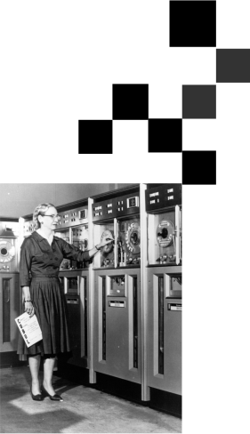

First Assembly Language
Kathleen Booth wrote the first assembly language and designed the assembler and autocode for the first computer systems at Birkbeck College, University of London. She helped design three different machines including the ARC (Automatic Relay Calculator), SEC (Simple Electronic Computer), and APE(X)C.
Conwell-Weisskopf Theory
Esther Conwell began studying how electrons move in semiconducting materials such as silicon. What became known as the Conwell-Weisskopf theory describes how “impurity ions” impede the flow of electrons; it is now considered essential for understanding how different materials affect the flow of electrons inside transistors, and it led to a better understanding of the making of integrated circuits.
The Beginning of White-Out
In 1956, Bette Nesmith Graham, the founder of the Liquid Paper company, invented one of the first forms of correction fluid. After getting frustrated with the difficulties of erasing type-writer errors, Graham came to the realization that an artist never erases to correct a mistake, rather they paint over that mistake.

First Written Compiler
The first compiler was written by Grace Hopper, in 1952, for the A-0 programming language. She also helped to popularize the idea of machine-independent programming languages which led to the development of COBOL, one of the first high-level programming languages.
First Woman to Break the Sound Barrier
To break the sound barrier, an aircraft’s speed must exceed the speed of sound, about 767 mph. In 1953, Jacqueline Cochran became the first woman to break the sound barrier. She pioneered women’s aviation as one of the most prominent racing pilots of her generation.